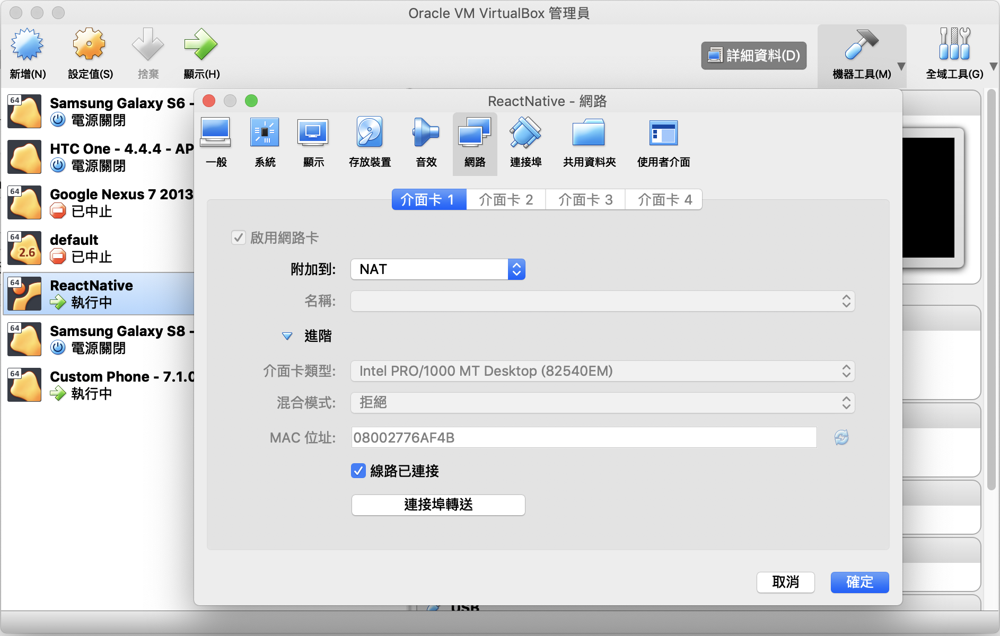

ToDoList 練習串接 RESTful API
前置準備
下載專案
- ToDoList RESTful API server
cd ~/workspace
git clone https://github.com/agileworks-tw/express-example
cd express-example
git checkout practice/005002_answer
yarn
- ToDoList React Native Sample
cd ~/workspace
git clone https://github.com/agileworks-tw/RN_Todo_Sample
cd RN_Todo_Sample
yarn
執行專案 （依照順序執行)
設定 VM 網路，新增連接埠轉送 3000 port


Run API server
cd ~/workspace/express-example
npm start
連線到 localhost:3000 頁面
新增 user React-Native
Run React Native ToDoList
cd ~/workspace/RN_Todo_Sample
# 確認在 feature/add-todo-list branch
# 這會執行 packager server
react-native start
# 需要另外開一個 terminal
react-native run-android
# 模擬器連接 3000 port
adb reverse tcp:3000 tcp:3000
完成後應該可以在 android 看到成功畫面

串接 API 練習
新增、刪除與取得 ToDo 列表功能，後端都實作完成了
試著透過串接以下 API，讓 App 可以與後端互動完成 ToDoList
- 串接取得 ToDo 列表，綁定到 FlatList 資料來源
- 串接 create API，當發送成功時，將新的 ToDo 加入到 state 物件中
- 串接 delete API，當發送成功時，將欲刪除的 ToDo 從 state 物件中移除
API 規格
- get
/api/users/ReactNative/tasks
method: 'get'
- create
/api/users/ReactNative/tasks/create
method 'post'
- delete
/api/task/${id}
method: 'delete'